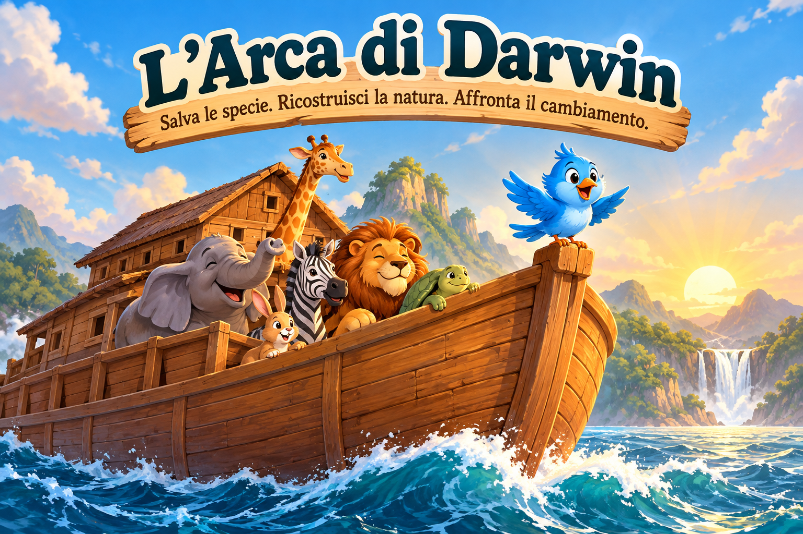

Salva le specie. Ricostruisci la natura. Affronta il cambiamento.
Benvenuto a bordo! Ti guiderò io!
Seleziona quattro animali e usa ◀ ▶ per sistemarli.
L'Uccellino Azzurro sorveglia l'imbarco!
Imbarcati: 0 / 4
Un piccolo viaggio nella storia della zoologia. Scopri gli animali che aiutarono Darwin a interrogarsi sulla diversità delle specie.
Tra il 1831 e il 1836 Charles Darwin viaggiò a bordo dell'HMS Beagle, osservando animali, piante, fossili e ambienti naturali in varie regioni del mondo.
I tordi imitatori delle diverse isole mostrarono a Darwin differenze particolarmente interessanti. I fringuelli, raccolti durante il viaggio, furono successivamente studiati dall'ornitologo John Gould, che ne riconobbe le affinità.
Le tartarughe giganti, le iguane marine e quelle terrestri delle Galápagos sono esempi importanti di adattamento a condizioni ambientali differenti.
Darwin osservò guanachi, armadilli e canidi sudamericani, e raccolse fossili di grandi mammiferi estinti. Il confronto fra animali viventi ed estinti contribuì alle sue riflessioni scientifiche.
L'Arca di Darwin è una simulazione ecologica ispirata alla biodiversità, non una ricostruzione letterale della fauna incontrata durante il viaggio. Leone, zebra, elefante e giraffa fanno parte del gioco, ma non erano specie studiate sul campo da Darwin durante la spedizione del Beagle.
Non conosciamo la risposta: Darwin non ci ha lasciato una scelta documentata per una situazione simile.
Durante il viaggio del Beagle studiò animali molto differenti, confrontando caratteristiche, ambienti e distribuzione geografica.
Una domanda per te: salveresti un animale perché è raro, perché svolge un ruolo importante nel suo ecosistema oppure perché ci aiuta a comprendere la natura?
Non cercare la risposta qui: sarai tu a decidere nell'ultima missione!